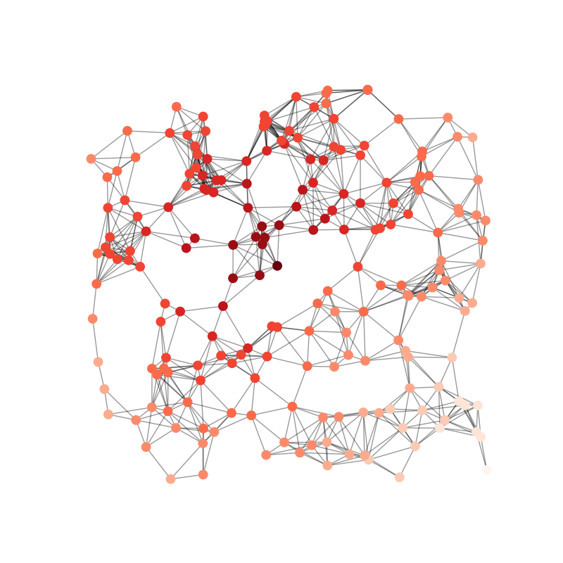

Note
Click here to download the full example code
Random Geometric Graph¶
Example
import matplotlib.pyplot as plt
import networkx as nx
G = nx.random_geometric_graph(200, 0.125)
# position is stored as node attribute data for random_geometric_graph
pos = nx.get_node_attributes(G, 'pos')
# find node near center (0.5,0.5)
dmin = 1
ncenter = 0
for n in pos:
x, y = pos[n]
d = (x - 0.5)**2 + (y - 0.5)**2
if d < dmin:
ncenter = n
dmin = d
# color by path length from node near center
p = dict(nx.single_source_shortest_path_length(G, ncenter))
plt.figure(figsize=(8, 8))
nx.draw_networkx_edges(G, pos, nodelist=[ncenter], alpha=0.4)
nx.draw_networkx_nodes(G, pos, nodelist=list(p.keys()),
node_size=80,
node_color=list(p.values()),
cmap=plt.cm.Reds_r)
plt.xlim(-0.05, 1.05)
plt.ylim(-0.05, 1.05)
plt.axis('off')
plt.show()
Total running time of the script: ( 0 minutes 0.053 seconds)